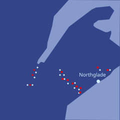
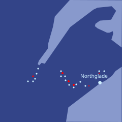

Zei watched the screen carefully, checking for any signs that the Arctic drone fleet might be breaking through. Forty minutes ago, he had given the recommendation that all groups do a slow retreat, cutting down trees to slow down snow drones and laying traps, with the primary goal of dragging out the battle longer. Lektor had taken his advice, and had relayed that he expected the strategy to work well at least until sunrise. So far, he had been right.
Zei's watch buzzed. It was Deluin.
I understand your concern and I fully agree that you do currently not have good reason to trust me.
Unfortunately, I do not have a way to give you the raw weights of the language models on the drones. Those are well-protected and only a very small number of people have access to them, precisely because they are worried about an adversary using those weights to run gradient descent attacks.
But I can give you the next best thing: API access to their simulated environment. This includes simulated copies of Arctic drones, both full world-model simulations and partial simulations that focus on their input modalities and give you classification results - given a particular visual input stream, what kind of object they think they are looking at.
Here are the network addresses and access keys, as well as addresses and keys for Arctic endpoints in Redshire that you can proxy through. Remember to be safe and minimize risk of detection.
Zei immediately forwarded the note to Bai. He also sent a copy to Fin, and sent Emerald an instruction to send Fin a maximum-priority emergency alarm and an explanation of what was going on.
Fin responded almost immediately.
"Alright Zei, what do you need?"
"Reading..."
"Yeah this seems doable. It's a not very well known fact that you don't actually need the raw weights of a model to effectively train adversarial attacks. There's definitely Bansunpei people who are very good at this stuff - 'language models' are quite connected to language!"
Zei also forwarded the note to Mu. Emerald automatically formed a real-time chat group. After a minute, about ten people were sharing insights about the problem and beginning to attack it in parallel.
"Let's assume that our attack medium is that we have our snow drones, and we have stick-on paper that we can print things on. We'll assume we deploy this after sunrise. Here's what you do: start with one pattern, run it inside the simulator, have our drone slowly approach the target and see how long it takes for the target to detect it. Measure detection time so that we have a scalar signal of how well we're hiding, not just a binary."
"Continue making small modifications to the pattern in all kinds of directions. Keep each modification that increases the target's detection time. It doesn't matter if the process has a lot of noise, the signal accumulates and the noise averages out over time. It's not as fast as gradient descent, but it still works. Eventually you get to a pattern that reliably tricks the adversary."
"We can do better. We have our own models that were trained in similar ways to the Arctic ones, and we obviously have the raw weights to those. So we can use gradient descent against our model. Identify, say, ten optimal perpendicular directions that maximize time-to-detection according to our model inside our simulator, and then use those as the trial deviations we try against their model inside their simulator. Simultaneously, we also use the results of every query to fine-tune our model to make it a better predictor of how the Arctic model will behave on these attacks."
"How quickly can we get this working?", Zei interjected.
"Coding should take at most ten minutes, Emerald can do it quickly. The full training loop ... maybe a longhour?"
"So it will be done around sunrise?"
"Exactly. And then you will need I don't know how many minutes to actually print the attack patterns on the sides of the drones, you should prepare that pipeline on your side so it's ready to go as soon as we are."
"Alright, everyone. Let's get moving."
Zei sat back, and kept scanning through zoomed-in views of the battle map and visual feeds. About a third of the Veridian drone fleet was already lost, but casualty rates had decreased considerably. The slow retreat strategy was working well: it also meant that any Veridian drones that had motion disabled by combat damage but had their weapons still intact could go into low-power mode and then wake up and do a final burst of damage as soon as the Arctics themselves advanced to their position.
After about fifteen minutes, Zei's watch buzzed again. Emerald was telling him to rejoin the chat.
"We have some early good news", a Bansunpei researcher exclaimed.
"What is it?"
"We've successfully accessed the Arctic simulation platform, and we've run the first few hundred trial rounds against the simulator. We have patterns that are increasing detection time by about five percent."
"Only five percent?"
"That just means the pipeline is starting to work."
"Oh, it just went up to eleven percent."
"It's definitely working", another researcher interjected. "We're continuing to run Emerald in parallel, optimizing the software. It's finding ways to extract more information from each query, and better parallelize the queries so this all happens faster."
Zei's watch buzzed.
I can see you are starting to run queries! Though you want to be more careful - if I can see it, the sentries might be able to as well. Here are some more proxy endpoints.
Also, add a bunch of dummy queries that are doing other things, and maybe even make each query attempt multiple different attacks simultaneously so it's less clear what it's doing.
Good advice, Zei thought. He forwarded it.
To verify the effectiveness of the simulator, they also ran simulations in a nighttime environment that exactly replicated a real-world setting of a small battle that had taken place earlier in the night. Another team, two researchers and Emerald instances, began figuring out how to automatically analyze the discrepancies between the simulator and reality in the nighttime setting to learn how to construct queries to the simulator that would better match real-world situations.
Zei watched the attack patterns become more and more optimized, sheets of paper containing squiggles and messages that seemed simultaneously very recognizable and familiar but also completely alien. Inside the simulator, the time that it took for the Arctic drone AI to detect their incoming drones more than doubled.
After another thirty minutes, it doubled again.
Lektor gave the order to set up printing infrastructure about two kilometers behind their current positions - a place they would be able to safely organize a retreat to around sunrise.
Human Veridian soldiers were already tens of kilometers behind the robotic frontline, and Lektor ordered them to start moving toward the front, so that they would be available to paste the attack patterns onto the snow drones. Manual dexterity was still a major weakness of AI.
Slowly, the sky began to shift from a near-total pitch black to a dark blue that was especially visible in the far east. As the minutes passed, the blue became brighter.
"Alright, we have some good patterns. It's getting close to sunrise in Northshore. I recommend shipping them now."
"Agreed", Zei replied.
"Then let's do it", Mu added.
Zei flipped through the visual feeds in his display. The majority of their drone fleet had retreated a kilometer, and a large number of pieces of paper were being printed and then almost immediately getting distributed and then stuck onto all sides of each snow drone and sky drone. The plan was in motion.
"Group North reporting: all non-forward drones have been equipped."
"Group Center reporting: all non-forward drones have been equipped."
"Group South reporting: all non-forward drones have been equipped."
"Group Naval reporting: we commandeered equipment in villages on the outskirts of Northglade, the locals were amazing, many woke up in the middle of the night to help us. Most non-forward drones have been equipped."
"Alright then", Lektor spoke up softly but firmly. "Action."
Zei checked the visual feeds, curious what the final version of the attack patterns actually looked like. He saw an endless row of snow drones with large pieces of paper plastered on all sides, each paper containing many colorful and squiggly patterns - and in a giant font, the word "DOG".
A few minutes later, he could see the results. The Veridian snow drones advanced quickly, pushing through enemy lines and turning the front into a chaotic mixture of drones on both sides. Casualty ratios were more than ten to one in the Veridian drone fleet's favor.

Zei allowed himself to feel a moment of joy - the first genuine joy that he had felt the whole night.
He remembered Den's words to him the day that he had almost caused the failure of the mission to rescue the Redshire president's son. "Outside the box as in, jumping out of your console chair and running over and bashing the other player in the face."
Breaking into your opponent's simulation environment, running millions of queries to optimize squiggles that you could draw on a piece of paper, and tricking your opponent's drones into thinking that your drones are dogs - did that count?
It probably did, Zei decided. Den would be proud.
As soon as he felt he had celebrated enough, Zei turned to a visual view of the statistic that really mattered: the casualty ratios. They had already dropped to six to one. So far the Arctic army had not yet adapted, but they had adopted emergency defensive positions, each squad of drones circling into a formation, to buy time. And they would adapt soon, Zei knew.
The chat that contained Bansunpei and Kungaupei members making queries to the Arctic simulation environment switched to optimizing simpler attacks: motion patterns that maximally delayed detection and interfered with targeting, sounds that could trick them, as well as the accuracy of their own fire - all mechanisms that did not require printing and sticking on new pieces of paper. They also incorporated some of the aggressive micro-tactics that Deluin had sent along with his original message.
Casualty ratios briefly increased back in the Veridians' favor, and then started decreasing again, though slowly. Zei continued watching.
After fifteen minutes, all access to the simulation environment was suddenly cut off. At around the same time, casualty ratios suddenly dropped back down to only one and a half to one in the Veridians' favor.
They had destroyed a large part of the Arctic drone fleet, but a large part still remained. They were now in a complicated positional battle, with a chaotic mixture of both sides' drone squads littering the battlefield with no clear front line.
Veridian human soldiers were only hundreds of meters behind the frontline, finding snow drones that were quickly repairable and repairing them. They were wearing thermal cloaks to minimize the chance of detection, and smoke from nearby burning trees provided additional cover. In a few of the visual feeds, Zei could see images of Arctic human soldiers doing the same thing in the distance, but they were fear fewer in number: while Veridians had been retreating through the night, they had been laying traps along the way, and those traps were much more effective against humans than against drones.
A few minutes later, Zei's watch buzzed again.
I hope you trust me now.
My next message will contain exact coordinates of some of our units on the southern flank, and recommended weak points to attack through.
jie fe hen dzi.
Zei smiled.
Of course I trust you, Deluin, he thought.
Almost immediately, Zei's watch buzzed again. He had received the second message.
He forwarded the coordinates to Mu.
"It's your chance to shine, Mu."
"Don't forget Vakaria."
Within minutes, casualty ratios on the southern front began to diverge heavily from the fronts further north, going back up in the Veridians' favor.
And only a few minutes later, they seemed to have achieved the result that they needed.

Mu transferred control of the southernmost portion of her drone fleet to Vakaria, who was assigned the task of entering and regaining control of Northglade.
The rest of her drone fleet swept northward. Over the next longhour she managed to completely surround the remaining Arctic drone fleet, linking up with Telpo's northernmost flank almost exactly a longhour after sunrise.
Gallowar's Group North defeated the remaining Arctic drones to its north and reached the river that marked the delineation between Veridian and core Arctic territory. A few drones crossed the river and bolted toward nearby Arctic towns, causing the Arctics to send emergency reinforcements. A portion of Telpo's fleet headed north to join Gallowar, reinforcing the northern front.
In the meantime, the second trip of seaborne drones went directly to Thaldur - the island east of Northshore that was core Arctic territory - and landed a fleet of air and snow drones that consolidated control over the island over the next few longhours. The Arctics could not effectively react, as Thaldur was too far away for either side to reach quickly, and the few drones that were in range were stuck defending against Gallowar.
By late afternoon on that day, the fighting grew quieter, as the last remnants of Arctic soldiers and drones in Northshore and Thaldur were methodically hunted down.
Zei sat back in his chair, and set it to incline backward as far it could. For the first time in over fourteen longhours, he went to sleep.